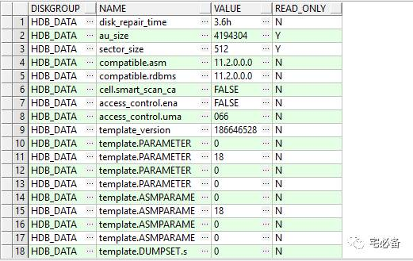
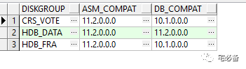
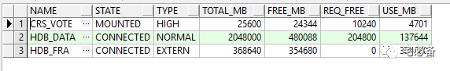
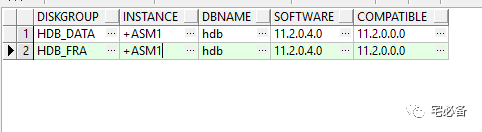

磁盘组的相关视图
原创 2017-11-07 Oracle 宅必备
这个专题讲ASM相关的内容
1.查看磁盘组的的属性值
SELECT dg.name AS diskgroup, SUBSTR(a.name,1,18) AS name,
SUBSTR(a.value,1,24) AS value, read_only FROM V$ASM_DISKGROUP dg,
V$ASM_ATTRIBUTE a WHERE dg.name = 'HDB_DATA'
AND dg.group_number = a.group_number;

2.查看磁盘组的兼容性值
SELECT name AS diskgroup, compatibility AS asm_compat,
database_compatibility AS db_compat FROM V$ASM_DISKGROUP;

3. 查看磁盘组中磁盘的情况
select name, state, type, total_mb, free_mb, required_mirror_free_mb req_free, usable_file_mb use_mb
from v$asm_diskgroup

下节详细讲解该视图
4.查看磁盘组客户端情况
SELECT dg.name AS diskgroup, SUBSTR(c.instance_name,1,12) AS instance, SUBSTR(c.db_name,1,12) AS dbname, SUBSTR(c.SOFTWARE_VERSION,1,12) AS software, SUBSTR(c.COMPATIBLE_VERSION,1,12) AS compatible FROM V$ASM_DISKGROUP dg, V$ASM_CLIENT c WHERE dg.group_number = c.group_number;
